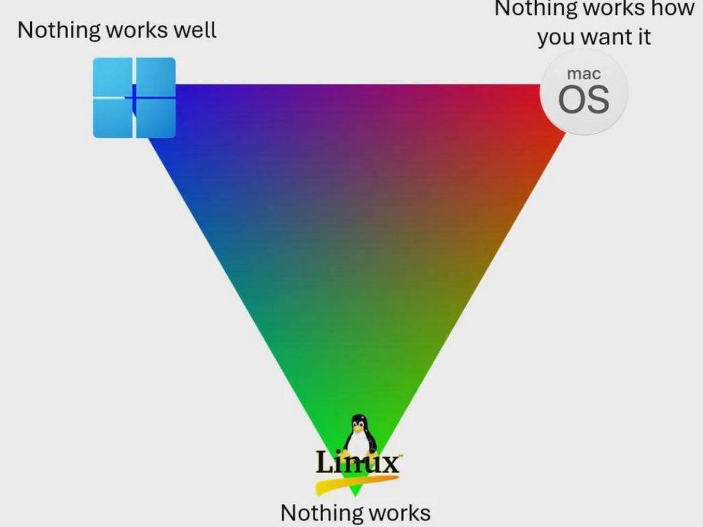
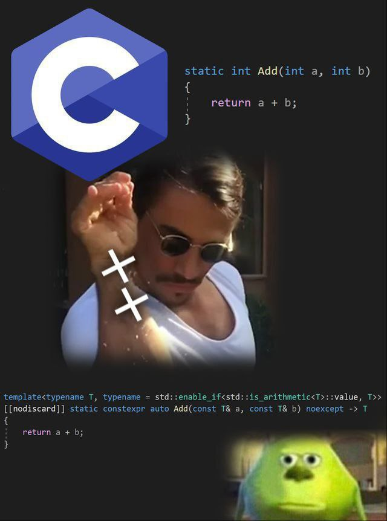
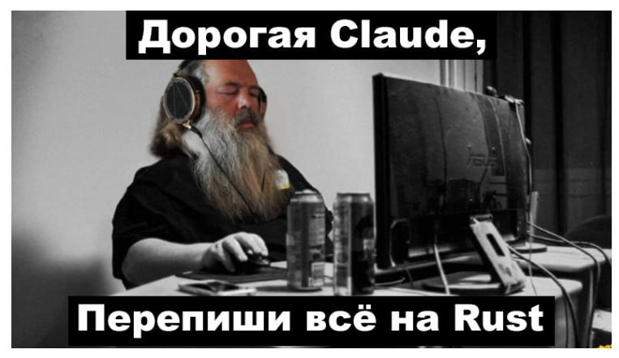

Мои практики и эксперименты
Великий переход: с Windows на Linux
Это был путь длиною в несколько нервных срывов, путь учебы на ошибках, начавшийся с осознания, что делает sudo rm -rf
Здесь будет картинка, описывающая эмоции от перехода на линукс
Охота на Null Pointer: дебаг C++ кода
Если переход на Linux был как переезд в другую страну, то дебаг C++ кода - это как поиск иголки в стоге сена, когда ты знаешь, что иголка может взорваться в любой момент.
Здесь будет скриншот эмоций от с++
Битва с компилятором: попытка освоить Rust
После C++ я решил, что мне не хватает стресса в жизни, и выбрал Rust.
Здесь будет скриншот, который описывает работу с rust
